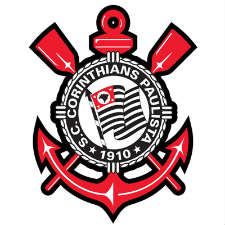

-
Corinthians

Corinthians
corinthians
se você idolatra político ou influencer você é um trouxa
O Manifesto Anti-Parasitas O parasita social é uma espécie que se tem expandido, suga a sociedade na qual se hospeda, explora-a e vive à sua custa, beneficia-se dela e enfraquece-a, enquanto extrai e se apodera dos seus bens, somente em proveito próprio.
Este verme, ganancioso e inútil, fútil e preguiçoso, burro e ignorante, sente o prazer de humilhar as pessoas, culpando-o das merdas que faz, assumindo os créditos por qualquer trabalho bem feito que faça.
.... Morram, vermes, Morram! Pum!
O Um dos grandes problemas da nossa sociedade é não saber qual o seu papel, para ajudar o país e o mundo. Muita gente culpa os políticos da situação económica que o nosso país está a passar, mas estes não são, de todo, o único problema da nossa nação.
Corinthians